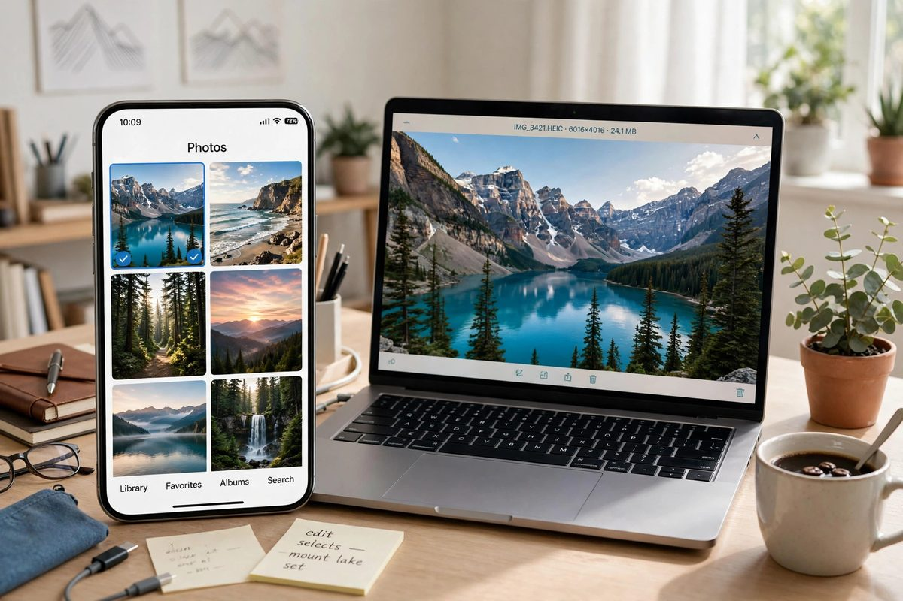

Home > Guides > How to Share Photos from Phone to Computer Without Losing Quality
How to Share Photos from Phone to Computer Without Losing Quality
A practical guide from PairDrop.

Photos are the files people share most, and also the ones most often damaged by the wrong method. A photo sent through a chat app can lose half its detail, and a photo emailed at a reduced size can never be recovered at full quality. If you print, edit or archive your pictures, you need the original file, not a compressed copy. This guide shows how to move photos from a phone to a computer at full resolution, in batches, without creating duplicates or losing the order they were taken in. It is written for everyday users, not technicians, and every method here uses tools you already have.
Send originals, not compressed copies
The single most important choice is the transfer method. Chat apps, social media and some email apps compress photos to save data. A USB cable, a cloud drive set to original quality, or a local Wi-Fi transfer keeps the file exactly as the camera made it. After a transfer, compare the file size of a photo on the computer with the same photo on the phone. If the computer copy is much smaller, it was compressed. For prints and editing, that difference matters. For a quick view on a screen, it may not. Decide what the photo is for before you choose the method, and keep originals for anything you may want to print or edit later.
Move photos in batches and keep their order
Moving hundreds of photos at once can be slow and confusing. Work in batches by date or by event, and copy each batch into a folder named with the date and the occasion, such as 2026-11-22-family-picnic. This keeps the order and makes photos easy to find later. Check the file count after each batch and look at a few photos at full size before moving on. If a batch fails, you only need to repeat that batch, not everything. Avoid moving the same photos twice, because duplicates waste space and make it hard to know which copy is the good one.
Back up as you transfer
Transfer day is a good day to back up. Once photos are on the computer, copy the folder to an external drive or a cloud backup before you delete anything from the phone. Photos deleted from a phone are often gone for good, and a phone lost or damaged before backup means the pictures are lost too. A simple rule helps: a photo is not safe until it exists in two places. Set a monthly reminder to move new photos to the computer and back them up, so the phone never holds months of irreplaceable pictures on its own.
Fix common photo transfer problems
If photos will not transfer, check the cable, the USB mode and the phone's lock screen first. If only some photos move, check free space on the computer and look for very large videos hiding in the same folder. If photos appear in the wrong order, sort the folder by date taken rather than by file name. If a photo looks rotated, open it in a photo app that reads its orientation data instead of a basic viewer. Most photo problems have a simple cause, and a calm check of cable, space and settings fixes the majority of them.
Quick tips
- Compare file sizes to spot compression
- Move photos in dated batches
- A photo is not safe until it exists in two places
- Sort by date taken, not file name
Frequently asked questions
Why are my photos smaller after sharing?
Many chat and email apps compress photos to save data. Use a cable, a local transfer or a cloud drive set to original quality to keep the full-size original.
How do I avoid duplicate photos?
Transfer in dated batches, check the file count after each batch, and delete from the phone only after the computer copy is verified and backed up.
Should I keep photos on my phone after transferring?
Keep them until you have a verified copy on the computer and a backup elsewhere. Then you can free space on the phone safely.